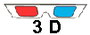
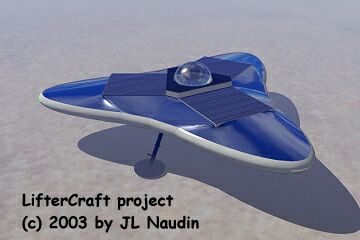

to see the 3D picture ( Red-Cyan glasses required )
The
LifterCraft project
par Jean-Louis
Naudin
Créé le 29
Janvier 2003 - JLN Labs -
Dernière mise à jour le 12 Mars 2003
Toutes les informations et schémas sont publiés
gratuitement ( freeware ) et sont destinés à un usage personnel
et non commercial
All informations and
diagrams are published freely (freeware) and are intended for a private use and a non commercial
use.
The purpose of the LifterCraft project is to build an electrokinetic flying craft which uses the Biefeld-Brown effect. This craft will be able to fly silently, without moving parts and will be propelled by electrical energy...
Le projet LifterCraft a pour but de réaliser un engin volant à propulsion électrocinétique utilisant l'Effet Biefeld-Brown. Cet engin sera capable de voler en silence, sans pièces mobiles et sera propulsé par de l'énergie électrique...
Pour utiliser ces
images comme fond d'écran, cliquez sur le bouton droit de votre
souris et sélectionnez "Etablir en tant que papier
peint"
To set these pictures as your desktop wallpaper, right-click on
the image, select "Set as Wallpaper" from the menu.
 Click on this
button
Click on this
button 
Cliquez sur le bouton "3D" pour voir une image en RELIEF ( lunettes Rouge-Cyan nécessaires )

I am
currently in search of sponsors to finance this project.
Je recherche actuellement des sponsors intéressés par le
financement de ce projet :  Email : JNaudin509@aol.com
Email : JNaudin509@aol.com

Now,
the Lifter-Cell introduces the concept of Modular
Thrusters...

 The
Lifter-Cell, towards Modular Thrusters...
The
Lifter-Cell, towards Modular Thrusters...
Sommaire du Projet Lifter (  version
Française )
version
Française )
Return to the Lifter
project (  English
version )
English
version )